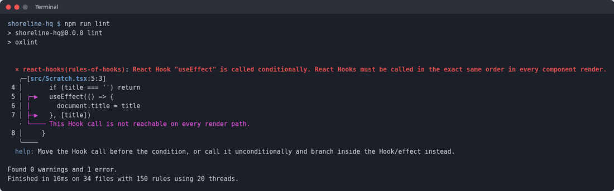

🪝 Lesson 4.2: Custom Hooks
Last lesson you wrote the same dozen lines four times: a state, an effect, a controller, a .then and a .catch, once for every page that loads data. Today you turn that pattern into a tool of your own. A custom Hook is just a function whose name starts with use, but it changes how a React app reads: each page says what it needs in one line, and the how lives in one place, typed once. You will build three Hooks for Shoreline Crew HQ, give every page a Try again button, and make the events search ask the API only when someone stops typing.
🎯 Learning Objectives
By the end of this lesson, you will be able to:
- Explain what a custom Hook is, when a plain function is the better choice, and why two components that call the same Hook do not share its state
- Follow the Rules of Hooks inside your own Hooks, and read the linter's
rules-of-hookserrors - Type what a Hook returns: nothing, one value, a tuple with
as const, or an object with an interface - Write generic Hooks (
useDebouncedValue<T>,useApi<T>) whose types follow the arguments you pass - Pass a function into a Hook safely with
useEffectEvent, and explain what a data library like TanStack Query adds on top of a Hook likeuseApi
📦 Code for this lesson
Starting code: lesson-14-start.zip · Finished code: lesson-14-end.zip. Each folder has a README with the commands to run it. Copy .env.example to .env.local in shoreline-hq before npm run dev.
In This Lesson
🪝 What a Custom Hook Is
Open SitesPage.tsx and NewEventPage.tsx side by side. Apart from the heading and what they show, they are the same: a LoadState, an effect with an AbortController, the same .then and .catch. The home page and the events page repeat it again. Four copies means four places to fix when you add a Try again button, and four chances to forget the aborted check in one of them.
You already know the cure for repeated code in JavaScript: a function. The only question is what to do about the Hooks inside it. React's answer is simple: a function whose name starts with use may call Hooks. That function is a custom Hook. There is no registration, no special type, no import from React: the name is the whole contract.
Here is the smallest useful one, pulled out of Lesson 4.1's TideClock. Try it as src/Scratch.tsx (your experiment file for this lesson), shown by temporarily making return <TideClock /> the first line of CurrentPage in App.tsx:
import { useEffect, useState } from 'react'
// A custom Hook: a function whose name starts with "use" and that calls other Hooks
function useNow(intervalMs: number): Date {
const [now, setNow] = useState(() => new Date())
useEffect(() => {
const timer = setInterval(() => setNow(new Date()), intervalMs)
return () => clearInterval(timer)
}, [intervalMs])
return now
}
export function TideClock() {
const now = useNow(1000)
return <p>Crew time: {now.toLocaleTimeString('en-US')}</p>
}
export function MinuteClock() {
const now = useNow(60_000)
return <p>This minute: {now.toLocaleTimeString('en-US', { timeStyle: 'short' })}</p>
}useNowcallsuseStateanduseEffectexactly as a component would. It returns a value instead of elements: the current time, typedDateby its return annotation.TideClockasks for the time every second,MinuteClockevery minute. Each reads like a sentence; the timer, its cleanup and its dependency live in one place.intervalMsis a parameter, and the effect reads it, so it goes in the dependency array. A Hook's parameters are just values from the component that calls it.
💡 Mental model: the laminated checklist
Every Shoreline Crew lead carries the same laminated card: "check in with the harbor office, count the bags, radio when you leave". The card is the custom Hook. It is written once, and every crew follows it. But each crew that follows the card has its own radio, its own bag count and its own sign-off. Nobody shares a bag count because they share a card. Custom Hooks share logic, never state.
That last sentence is worth proving. Put two components on a page that both call the Hook you will build today, useApi('/sites', getSites):
import { getSites } from './api/client.ts'
import { useApi } from './hooks/useApi.ts'
function SiteCount() {
const sites = useApi('/sites', getSites)
return <p>Sites: {sites.state.kind === 'ready' ? sites.state.data.length : '…'}</p>
}
export function TwoCounts() {
return (
<>
<SiteCount />
<SiteCount />
</>
)
}The page shows "Sites: 6" twice, and the Network tab on the dev server shows four requests for /api/sites, two of them canceled: each SiteCount has its own state and its own effect, and Strict Mode runs each effect twice in development (Lesson 4.1). Two calls, two requests, two states. Sharing one answer between components is a different job: lifting state up (Lesson 3.4), context (Lesson 5.2), or a data library with a cache (Lesson 7.1).
Hook, function or component?
| The repeated code… | Make it a… | In the HQ |
|---|---|---|
| calls no Hooks: it only calculates | plain function (no use in the name) | formatDate, getAvailability, validateEvent |
| returns elements for the screen | component | LoadStatus, EventCard |
| calls Hooks and returns values | custom Hook | useApi, useDebouncedValue, useDocumentTitle (today) |
💡 Why this matters
On a team, custom Hooks are how knowledge gets shared: the one person who worked out the canceling, the error messages and the retry writes them once, and everyone else writes one line. Most React codebases you join will have a hooks/ folder, and reading, using and reviewing those Hooks is daily work. Interviewers like the topic too: "extract this into a custom Hook and type it" is a classic exercise.
A useful habit from experienced teams: wait until you have written something twice before you extract it, and name the Hook after what it gives the component (useNow), not after how it works inside (useIntervalState). The HQ has four copies of its loading effect, so it is well past "twice".
📏 The Rules, for Your Own Hooks
The Rules of Hooks from Lesson 3.4 apply inside your Hooks too, because React cannot tell where a Hook call comes from: it only counts calls, in order, on every render. So:
- Call Hooks at the top level of a component or a custom Hook: never inside a condition, a loop, a nested function, or after an early
return. - Call Hooks only from components and custom Hooks, never from a plain function.
- Start a custom Hook's name with
use, followed by a capital letter:useApi, notuseapiorloadApi.
The name matters to the tools, not just to people. Here is the tab-title effect from Lesson 4.1's Exercise 2, extracted into a function with an ordinary name:
import { useEffect } from 'react'
// Not named use…: the linter cannot tell that it calls Hooks
function setTabTitle(title: string) {
useEffect(() => {
document.title = title
}, [title])
}
export function SitesHeading() {
setTabTitle('Beach sites')
return <h1>Beach sites</h1>
}Expected output (npm run lint)
> shoreline-hq@0.0.0 lint
> oxlint
× react-hooks(rules-of-hooks): React Hook "useEffect" is called in function "setTabTitle" that is neither a React function component nor a custom React Hook function. React component names must start with an uppercase letter. React Hook names must start with the word "use".
╭─[src/Scratch.tsx:5:3]
3 │ // Not named use…: the linter cannot tell that it calls Hooks
4 │ function setTabTitle(title: string) {
· ─────┬─────
· ╰── Outer function
5 │ useEffect(() => {
· ────┬────
· ╰── Hook is called here
6 │ document.title = title
╰────
Found 0 warnings and 1 error.
Finished in 12ms on 34 files with 150 rules using 20 threads.TypeScript has no complaint (npx tsc -b passes): types say nothing about where Hooks may run. The linter's rules-of-hooks check is an error, and its message tells you the fix in its last sentence: rename setTabTitle to useTabTitle and the error is gone. With the use name, the linter checks every rule inside the Hook as well, which is how it catches the mistake in Common Mistakes.
Read that error as feedback, not as a scolding. The rules feel arbitrary until you remember why they exist: React matches the first useState call with the first piece of state, the second with the second, on every render. A Hook that only sometimes runs shifts every Hook after it.
🧾 Typing What a Hook Returns
A Hook can return anything a function can. Four shapes cover nearly every Hook you will write or meet:
| Returns | When | Example |
|---|---|---|
nothing (void) | The Hook only keeps something outside React in step | useDocumentTitle('Beach sites') |
| one value | The component needs one thing | const search = useDebouncedValue(query, 300) |
| a tuple | Two (at most three) things the caller names itself, like useState | const [open, toggle] = useToggle(false) |
| an object | Three or more things, or things whose names matter | const sites = useApi(…), then sites.state, sites.reload |
The tuple trap
A toggle Hook returns a value and a function, like useState does:
import { useState } from 'react'
function useToggle(initial: boolean) {
const [on, setOn] = useState(initial)
const toggle = () => setOn((current) => !current)
return [on, toggle]
}
export function DetailsButton() {
const [open, toggle] = useToggle(false)
return (
<button type="button" aria-expanded={open} onClick={toggle}>
Details
</button>
)
}Expected output (npx tsc -b)
src/Scratch.tsx:12:48 - error TS2322: Type 'boolean | (() => void) | undefined' is not assignable to type 'MouseEventHandler<HTMLButtonElement> | undefined'.
Type 'boolean' is not assignable to type 'MouseEventHandler<HTMLButtonElement>'.
12 <button type="button" aria-expanded={open} onClick={toggle}>
~~~~~~~
node_modules/@types/react/index.d.ts:2469:9 - The expected type comes from property 'onClick' which is declared here on type 'DetailedHTMLProps<ButtonHTMLAttributes<HTMLButtonElement>, HTMLButtonElement>'
2469 onClick?: MouseEventHandler<T> | undefined;
~~~~~~~
Found 1 error in src/Scratch.tsx:12Read the first line of the message: toggle is boolean | (() => void) | undefined. When TypeScript infers the type of an array literal, it assumes the array can grow, shrink and be reordered, so [on, toggle] becomes (boolean | (() => void))[]: any number of items, each either kind. Destructuring an array then gives each name the union, plus undefined because of noUncheckedIndexedAccess (Lesson 2.4: an array may be shorter than you think). Nothing says the first item is the boolean.
The fix is two words at the end of the return:
function useToggle(initial: boolean) {
const [on, setOn] = useState(initial)
const toggle = () => setOn((current) => !current)
return [on, toggle] as const
}as const tells TypeScript "this array will never change". The return type becomes readonly [boolean, () => void], a tuple: exactly two items, a boolean first and a function second. npx tsc -b passes, and open and toggle each get their own type. You met tuples in Lesson 4.1 (Promise.all); useState's own return type is a tuple too.
An object needs no such trick: property names keep their own types. For a Hook other files will use, write the object's shape as an exported interface and put it in the return annotation. The interface is then the Hook's documentation, and a mistake inside the Hook (a missing property, a wrong type) is reported at the return, inside the Hook, instead of in every component that uses it.
🧬 Generic Hooks: Waiting for the Typing to Stop
This lesson's events search will ask the API instead of filtering in the browser. The API searches more than the page could: titles, descriptions and site names, so "pelican" will find every cleanup at Pelican Point Beach. But a search box changes on every keystroke. Typing "pelican" one letter at a time would send seven requests, for "p", "pe", "pel" and so on, when only the last one matters.
The usual answer is to debounce: wait until the value has stopped changing for a moment, then use it. As a Hook:
import { useEffect, useState } from 'react'
/** The value, but only once it has stopped changing for `delay` milliseconds */
export function useDebouncedValue<T>(value: T, delay: number): T {
const [settled, setSettled] = useState(value)
useEffect(() => {
const timer = setTimeout(() => setSettled(value), delay)
return () => clearTimeout(timer)
}, [value, delay])
return settled
}- Every new
valuestarts a timer, and the cleanup of the previous run clears the previous timer. While someone keeps typing, each keystroke cancels the last timer, sosetSettledonly runs once the typing has paused fordelaymilliseconds. - Setting state inside a timer callback is what effects are for; the linter's
set-state-in-effectrule from Lesson 4.1 does not mind it. - The file is
.ts, not.tsx: a Hook that returns no elements contains no JSX.
The <T> makes it work for any kind of value, exactly like Lesson 2.3's first<T>. You almost never write the type yourself: TypeScript infers T from the first argument. Measured with this course's setup, useDebouncedValue(query.trim(), 300) returns string, and with the events page's status (typed StatusFilter) it returns StatusFilter: whatever goes in comes out, with its type. useState(value) inside needs no annotation for the same reason: its type is T.
In the project the events page sends ?q= to the API with the settled value. Measured on the dev server, typing "pelican" with a tenth of a second between keys sent exactly one search, perPage=50&q=pelican. With the delay set to 0 (try it after the project), the same typing sent 7 requests, one per letter.
🔌 A Hook for Loading Data
Now the big one: the loading effect from Lesson 4.1, as a Hook. The page should say how to load its data, and the Hook should do the rest. The obvious first try takes the load function as a parameter and, as the linter asks, puts it in the dependency array:
import { useEffect, useState } from 'react'
import { describeError, getEvents } from './api/client.ts'
import type { LoadState } from './utils/loadState.ts'
// A first try: the load function is a dependency like any other
function useApiFirstTry<T>(load: (signal: AbortSignal) => Promise<T>): LoadState<T> {
const [state, setState] = useState<LoadState<T>>({ kind: 'loading' })
useEffect(() => {
const controller = new AbortController()
load(controller.signal)
.then((data) => setState({ kind: 'ready', data }))
.catch((error: unknown) => {
if (controller.signal.aborted) return
setState({ kind: 'failed', message: describeError(error) })
})
return () => controller.abort()
}, [load])
return state
}
export function CoveCount() {
const search = 'cove'
const state = useApiFirstTry((signal) => getEvents(`q=${search}`, signal))
return <p>{state.kind === 'ready' ? `Found ${state.data.page.total}` : 'Searching…'}</p>
}npx tsc -b and npm run lint both pass. The page shows "Found 2". And the Network tab fills up: on this course's machine, more than 700 requests in two seconds, the same flood as an effect with no array at all. Why? (signal) => getEvents(…) creates a new function on every render of CoveCount. React compares dependencies with Object.is, and two functions are never the same object, even with the same code. So: render, new function, effect runs, answer arrives, state changes, render, new function, effect runs…
Two pieces of information are mixed up in that one parameter. What you are loading (the sites, or the cleanups matching "cove") decides when to load again. How you load it (which client function, which signal) does not. So useApi takes them separately:
key: a short string naming what is loaded. The course uses the API path,'/sites'or'/events?q=cove'. Strings compare by value, so the same key on every render means "nothing changed". The key is in the effect's array.load: how to load it, a function that receives theAbortSignal. It may be a new function on every render; that no longer matters.
The second point needs React 19's useEffectEvent. It wraps a function so that an effect can call it and always get the latest version, without that function being a dependency:
export function useApi<T>(key: string, load: (signal: AbortSignal) => Promise<T>): ApiResult<T> {
const [state, setState] = useState<LoadState<T>>({ kind: 'loading' })
const [attempt, setAttempt] = useState(0)
// The latest load function, without making the effect run again when it changes
const loadLatest = useEffectEvent(load)
useEffect(() => {
const controller = new AbortController()
loadLatest(controller.signal)
.then((data) => setState({ kind: 'ready', data }))
.catch((error: unknown) => {
if (controller.signal.aborted) return
console.error(error)
setState({ kind: 'failed', message: describeError(error) })
})
return () => controller.abort()
}, [key, attempt])
function reload() {
setState({ kind: 'loading' })
setAttempt((count) => count + 1)
}
return { state, reload }
}loadLatesthas the same type asload(useEffectEvent's type is "give me a function, get the same kind of function back"). The effect calls it; the linter knows functions fromuseEffectEventmust not be in the array (Common Mistakes shows the warning).- The array is
[key, attempt]. The effect does not readkeyat all:keyis there only to say "run again when this changes", the same trick asattemptin Lesson 4.1's Exercise 1. reloadis that exercise, built in: show the loading message and count one more attempt, in the same click. Every page gets a Try again button for free.- When
keychanges, the state does not go back toloading(setting state at the top of an effect is what the linter warned about in 4.1). The page keeps showing the last answer until the new one arrives. For a search box that is exactly right: the list does not blink away while you type. You will see it with a slow API in the project.
The types follow the arguments again. useApi('/sites', getSites) infers T from getSites' return type, Promise<Site[]>, so the result is ApiResult<Site[]>, its state is LoadState<Site[]> and reload is () => void. After sites.state.kind === 'ready', sites.state.data is Site[], exactly as before: the Hook moved the code, not the safety.
🧩 Version note: useEffectEvent
useEffectEvent joined React's stable releases in React 19.2; in older code and older articles you will see the same problem solved with useCallback (Lesson 5.3) or a ref that stores the latest function (Lesson 4.3 introduces refs). The idea is the same: the effect should run again when what changes, not when a function is recreated.
What useApi does not do, and why a library takes over later
useApi is about forty lines, and it is the right size for learning what every data library does inside. It is not the end of the story. Here is what it leaves out:
| Real apps want… | useApi today |
|---|---|
Two pages asking for '/sites' share one answer (a cache) | Every call sends its own request; leave a page and come back, and it loads again |
| Retrying a failed request on its own, a couple of times | Only when someone presses Try again |
| Refreshing data that may be old when the tab gets focus again | Never refreshes by itself |
| Knowing "showing old results, new ones on the way" | Keeps old results but cannot say so (Exercise 3 adds it) |
| Updating the screen after a create or edit, everywhere it appears | No idea that data changed |
Lesson 7.1 replaces useApi with TanStack Query, which does all of this. You will recognize its main Hook: useQuery takes a queryKey (what you load, and the key of its cache) and a queryFn (how to load it, and it receives a signal). That is today's key and load, with years of edge cases handled. Writing the small version first is how the big one stops being magic.
⚠️ Common Mistakes
⚠️ An early return before a Hook, inside your Hook
It looks harmless to skip the work when there is no title:
import { useEffect } from 'react'
export function useTabTitle(title: string) {
if (title === '') return
useEffect(() => {
document.title = title
}, [title])
}
useTabTitle is a Hook from its name, so it checks the Rules of Hooks inside it: an early return before a Hook is an error, not a warning.On renders where the title is empty, useEffect is not called, and every Hook the component calls after useTabTitle shifts by one. Do what the help line says: call the Hook every time and put the condition inside the effect (if (title === '') return as the effect's first line).
⚠️ Putting the useEffectEvent function in the array
Old habits say "everything the effect uses goes in the array". For functions from useEffectEvent, the linter says the opposite:
Expected output (npm run lint, trimmed)
⚠ react-hooks(exhaustive-deps): Functions returned from `useEffectEvent` must not be included in the dependency array.
╭─[src/hooks/useApi.ts:32:21]
31 │ return () => controller.abort()
32 │ }, [key, attempt, loadLatest])
· ──────────
33 │
╰────
help: Remove the dependency from the dependency array.A useEffectEvent function is not meant to trigger anything; it is a fresh copy on every render, so in the array it would bring back the endless requests. Leave it out, and put the values that should trigger a reload (the key) in the array.
⚠️ Calling load directly in the effect
Skip useEffectEvent and call load(controller.signal) in the effect, and the linter notices twice: loadLatest is unused, and
Expected output (npm run lint, one of two warnings)
⚠ react-hooks(exhaustive-deps): React Hook useEffect has a missing dependency: 'load'
help: Either include it or remove the dependency array.Adding load to the array makes the warning go away and brings back the first try's flood of requests. The warning is right that the effect reads load; useEffectEvent is how you tell React it should read the latest one without reacting to it.
🛠️ Project: Three Hooks for the HQ
At the end of this project, src/hooks/ holds three Hooks. Every page that loads data uses useApi (no more copied effects) and shows a Try again button when loading fails. The sites, events and "Plan a cleanup" pages put their name in the browser tab. And the events page searches through the API, once the typing pauses, with the status filter asking the API too.
Start both servers (node server.ts in shoreline-api, npm run dev in shoreline-hq) and delete src/Scratch.tsx (and the line you added to CurrentPage) if you still have them.
Step 1: The tab title Hook (6 min)
Create the folder src/hooks and in it useDocumentTitle.ts:
import { useEffect } from 'react'
const appName = 'Shoreline Crew HQ'
/** Shows "title · Shoreline Crew HQ" in the browser tab while the component is on the screen */
export function useDocumentTitle(title: string): void {
useEffect(() => {
const previous = document.title
document.title = `${title} · ${appName}`
return () => {
document.title = previous
}
}, [title])
}This is Lesson 4.1's Exercise 2 with a name: remember the old title, set the new one, put the old one back in the cleanup. The return type void says out loud that this Hook gives the component nothing; it only keeps the tab in step. title is in the array, so a page whose title changes (Exercise 2) updates the tab. The app's name is added in one place, so no page can spell it differently.
Restoring the old title may look unnecessary today, because every link loads a whole new page. From Lesson 6.1 the router swaps pages without a reload, and then a page that leaves without its cleanup would leave its title behind.
Step 2: The data Hook (12 min)
Create src/hooks/useApi.ts. Everything inside the function is the pattern from Lesson 4.1, now in one place:
import { useEffect, useEffectEvent, useState } from 'react'
import { describeError } from '../api/client.ts'
import type { LoadState } from '../utils/loadState.ts'
/** What useApi gives a component: the state of the request, and a way to send it again */
export interface ApiResult<T> {
state: LoadState<T>
reload: () => void
}
/**
* Loads data when the component appears, and again whenever `key` changes.
* key: what is loaded (a short text that changes when the request should change)
* load: how to load it (gets an AbortSignal so the request can be canceled)
*/
export function useApi<T>(key: string, load: (signal: AbortSignal) => Promise<T>): ApiResult<T> {
const [state, setState] = useState<LoadState<T>>({ kind: 'loading' })
const [attempt, setAttempt] = useState(0)
// The latest load function, without making the effect run again when it changes
const loadLatest = useEffectEvent(load)
useEffect(() => {
const controller = new AbortController()
loadLatest(controller.signal)
.then((data) => setState({ kind: 'ready', data }))
.catch((error: unknown) => {
if (controller.signal.aborted) return
console.error(error)
setState({ kind: 'failed', message: describeError(error) })
})
return () => controller.abort()
}, [key, attempt])
function reload() {
setState({ kind: 'loading' })
setAttempt((count) => count + 1)
}
return { state, reload }
}ApiResult<T>is exported, so any file can name the result's type, and the return annotation makes TypeScript check thereturnagainst it.- The
/** … */comment above the function is what VS Code shows when you hover overuseApianywhere in the project: documentation for the next person, who may be you in a month. describeErrorandconsole.errormoved here from the pages: the messages for people and the details for developers are now decided once.
Run npx tsc -b: no errors, even though nothing uses the Hook yet.
Step 3: Try again, for every page (6 min)
LoadStatus gets an optional onRetry prop. When it is there, the error gets a Try again button. Replace src/components/LoadStatus.tsx:
import type { LoadState } from '../utils/loadState.ts'
import buttonStyles from './Button.module.css'
import styles from './LoadStatus.module.css'
interface LoadStatusProps {
state: LoadState<unknown>
/** What is loading, for the messages: "the beach sites" */
what: string
/** Shows a "Try again" button under the error */
onRetry?: () => void
}
// The message to show while data is on its way, or when it could not be loaded
export function LoadStatus({ state, what, onRetry }: LoadStatusProps) {
if (state.kind === 'loading') {
return (
<p role="status" className={styles.loading}>
Loading {what}…
</p>
)
}
if (state.kind === 'failed') {
return (
<div className={styles.failed}>
<p role="alert">
Could not load {what}. {state.message}
</p>
{onRetry && (
<button type="button" className={buttonStyles.secondary} onClick={onRetry}>
Try again
</button>
)}
</div>
)
}
return null
}The alert text stays in its own <p role="alert">, so screen readers announce the message without the button's label mixed in; the red border moves to the div around both. The button uses the shared buttonStyles from Lesson 3.6. Add the two new rules at the end of src/components/LoadStatus.module.css:
.failed {
border: 2px solid var(--error);
}
+
+.failed p {
+ margin: 0;
+}
+
+.failed button {
+ margin-top: 0.75rem;
+}Because onRetry is optional, the four pages still compile unchanged. Their turn is next.
Step 4: Three pages, one line each (12 min)
Replace src/pages/SitesPage.tsx:
import { getSites } from '../api/client.ts'
import { LoadStatus } from '../components/LoadStatus.tsx'
import { SiteCard } from '../components/SiteCard.tsx'
import { useApi } from '../hooks/useApi.ts'
import { useDocumentTitle } from '../hooks/useDocumentTitle.ts'
import styles from './Page.module.css'
export function SitesPage() {
useDocumentTitle('Beach sites')
const sites = useApi('/sites', getSites)
return (
<>
<h1>Beach sites</h1>
<p className={styles.lead}>Six stretches of coast the crew looks after.</p>
{sites.state.kind === 'ready' ? (
<div className={styles.grid}>
{sites.state.data.map((site) => (
<SiteCard key={site.id} site={site} />
))}
</div>
) : (
<LoadStatus state={sites.state} what="the beach sites" onRetry={sites.reload} />
)}
</>
)
}Compare it with the version from Lesson 4.1: the imports of useEffect, useState, describeError, Site and LoadState are gone, and a dozen lines of state and effect became one line. getSites is passed as it is, because its signature, (signal?: AbortSignal) => Promise<Site[]>, already fits load. Hooks come first in the component, as always.
"Plan a cleanup" loads the same sites. Replace src/pages/NewEventPage.tsx:
import { getSites } from '../api/client.ts'
import { LoadStatus } from '../components/LoadStatus.tsx'
import { NewEventForm } from '../components/NewEventForm.tsx'
import { useApi } from '../hooks/useApi.ts'
import { useDocumentTitle } from '../hooks/useDocumentTitle.ts'
import styles from './Page.module.css'
export function NewEventPage() {
useDocumentTitle('Plan a cleanup')
// The form needs the sites for its menu and its checks
const sites = useApi('/sites', getSites)
return (
<>
<h1>Plan a cleanup</h1>
<p className={styles.lead}>
Fill in the basics. Save it as a draft to finish later, or publish it so volunteers can
sign up.
</p>
{sites.state.kind === 'ready' ? (
<NewEventForm sites={sites.state.data} />
) : (
<LoadStatus state={sites.state} what="the beach sites" onRetry={sites.reload} />
)}
</>
)
}The home page needs a parameter: its query string. In src/pages/HomePage.tsx, change the imports:
-import { useEffect, useState } from 'react'
-import { describeError, getEvents, type Page } from '../api/client.ts'
+import { getEvents, type Page } from '../api/client.ts'
import type { CleanupEvent } from '../api/types.ts'
import { Card } from '../components/Card.tsx'
import { LoadStatus } from '../components/LoadStatus.tsx'
+import { useApi } from '../hooks/useApi.ts'
import { formatDate } from '../utils/format.ts'
-import type { LoadState } from '../utils/loadState.ts'
import styles from './Page.module.css'name the query once, under the towns:
const towns = ['Port Marisol', 'Calder Bay', 'Seal Rock']
+
+// One cleanup is enough: the first scheduled one from today on
+const nextQuery = 'status=scheduled&when=upcoming&perPage=1'and replace the state and the effect at the top of HomePage, and the card's contents:
export function HomePage() {
- const [state, setState] = useState<LoadState<Page<CleanupEvent>>>({ kind: 'loading' })
-
- // One cleanup is enough: the first scheduled one from today on
- useEffect(() => {
- const controller = new AbortController()
- getEvents('status=scheduled&when=upcoming&perPage=1', controller.signal)
- .then((upcoming) => setState({ kind: 'ready', data: upcoming }))
- .catch((error: unknown) => {
- if (controller.signal.aborted) return
- console.error(error)
- setState({ kind: 'failed', message: describeError(error) })
- })
- return () => controller.abort()
- }, [])
+ const upcoming = useApi(`/events?${nextQuery}`, (signal) => getEvents(nextQuery, signal)) <Card title="Next cleanup">
- {state.kind === 'ready' ? (
- <NextCleanup upcoming={state.data} />
+ {upcoming.state.kind === 'ready' ? (
+ <NextCleanup upcoming={upcoming.state.data} />
) : (
- <LoadStatus state={state} what="the next cleanup" />
+ <LoadStatus state={upcoming.state} what="the next cleanup" onRetry={upcoming.reload} />
)}Here load is an inline arrow, a new function on every render, and that is fine: thanks to useEffectEvent only the key decides when to load. The key is built from the same constant as the request, so the two cannot disagree. Run npx tsc -b and open /, /sites and /events/new: everything looks as before, and the tabs of the last two now say where you are.
Step 5: The events page searches through the API (16 min)
Create src/hooks/useDebouncedValue.ts with the code from the lesson (Generic Hooks). Then the events page changes the most: the API does the searching and the status filtering, and the page only groups what it gets back. Replace src/pages/EventsPage.tsx:
import { useState } from 'react'
import { getEvents, getSites } from '../api/client.ts'
import type { CleanupEvent, Site } from '../api/types.ts'
import { EventFilters, type StatusFilter } from '../components/EventFilters.tsx'
import { EventList } from '../components/EventList.tsx'
import { LoadStatus } from '../components/LoadStatus.tsx'
import { useApi } from '../hooks/useApi.ts'
import { useDebouncedValue } from '../hooks/useDebouncedValue.ts'
import { useDocumentTitle } from '../hooks/useDocumentTitle.ts'
import styles from './Page.module.css'
interface EventGroupsProps {
events: CleanupEvent[]
sites: Site[]
filtering: boolean
}
// The cleanups the API found, in three groups
function EventGroups({ events, sites, filtering }: EventGroupsProps) {
const upcoming = events.filter((event) => event.status === 'scheduled')
const drafts = events.filter((event) => event.status === 'draft')
const past = events
.filter((event) => event.status === 'completed' || event.status === 'cancelled')
.toReversed()
const noMatches = 'No cleanups here match your filters.'
return (
<>
<p className={styles.lead} role="status">
Found {events.length} {events.length === 1 ? 'cleanup' : 'cleanups'}: {upcoming.length}{' '}
coming up, {past.length} in the log.
</p>
<h2>Coming up</h2>
<EventList
events={upcoming}
sites={sites}
emptyMessage={filtering ? noMatches : 'Nothing scheduled yet.'}
/>
<h2>Drafts</h2>
<EventList
events={drafts}
sites={sites}
emptyMessage={filtering ? noMatches : 'No drafts waiting to be published.'}
/>
<h2>Past cleanups</h2>
<EventList
events={past}
sites={sites}
emptyMessage={filtering ? noMatches : 'No cleanups in the log yet.'}
/>
</>
)
}
export function EventsPage() {
const [query, setQuery] = useState('')
const [status, setStatus] = useState<StatusFilter>('all')
useDocumentTitle('Cleanup events')
// The API searches; the page asks only once the typing has paused
const search = useDebouncedValue(query.trim(), 300)
const params = new URLSearchParams({ perPage: '50' })
if (search !== '') params.set('q', search)
if (status !== 'all') params.set('status', status)
const eventsQuery = params.toString()
const sites = useApi('/sites', getSites)
const events = useApi(`/events?${eventsQuery}`, (signal) => getEvents(eventsQuery, signal))
function clearFilters() {
setQuery('')
setStatus('all')
}
// Whichever request is not ready yet decides what the status message says
const waiting = sites.state.kind !== 'ready' ? sites : events
return (
<>
<h1>Cleanup events</h1>
<p>
<a href="/events/new">Plan a cleanup</a>
</p>
<EventFilters
query={query}
status={status}
onQueryChange={setQuery}
onStatusChange={setStatus}
onClear={clearFilters}
/>
{sites.state.kind === 'ready' && events.state.kind === 'ready' ? (
<EventGroups
events={events.state.data.items}
sites={sites.state.data}
filtering={search !== '' || status !== 'all'}
/>
) : (
<LoadStatus state={waiting.state} what="the cleanups" onRetry={waiting.reload} />
)}
</>
)
}matchesFiltersis gone: the API filters.URLSearchParamsbuilds the query string (and encodes anything a person types, such as spaces or&). After thestatus !== 'all'check, TypeScript narrowsstatusfromStatusFiltertoEventStatus, so only one of the four statuses the API accepts can be sent.- The query string is also the key: a different search or status is a different key, so
useApiloads again; the same one is not. searchis the settled text. The input still shows every key you press (it readsquery), but the request waits for 300 ms of quiet.- Two
useApicalls, two independent states: the sites load once, the cleanups again for every search.waitingpicks whichever is not ready yet for the message and its Try again button, since both have the same shape (ApiResult). - The heading, the link and the filters always show; only the results wait. In Lesson 4.1 an early return hid the whole page while loading. Now that loading happens on every search, the search box must never disappear while you type in it. The grouped list moved into a small local component,
EventGroups, likeNextCleanupon the home page. - The status line now says "Found 15 cleanups" instead of "Showing 15 of 15": the page only knows what the API sent back.
Open /events and type pelican:

In the browser's Network tab (filter by Fetch/XHR), the search shows up as one request for events?perPage=50&q=pelican after you stop typing. Choose Cancelled in the Status menu, and a request with status=cancelled follows at once. Clear filters brings all fifteen back.
Step 6: Check it, slow it down, break it (8 min)
npx tsc -b
npm run lint
npm run buildExpected output (npm run lint)
> shoreline-hq@0.0.0 lint
> oxlint
Found 0 warnings and 0 errors.
Finished in 11ms on 33 files with 150 rules using 20 threads.Now watch the Hook keep the previous answer. Stop shoreline-api and start it slow:
node server.ts --latency=1500Reload /events, wait for the list, and type pelican. For about a second and a half after you stop typing, the page still shows the fifteen cleanups, and the status line still says Found 15 cleanups: 8 coming up, 7 in the log. Then the three results replace them. Nothing blinks, nothing jumps. (Exercise 3 adds a "Searching…" message for that second and a half.)
Last, stop shoreline-api and reload /sites:

useApi's reload. Start the API, press it, and the sites appear.Start the API again (node server.ts) and press Try again: the six sites appear and the error and its button are gone. Try the same on /, /events and /events/new; each page got the button from one line in useApi and one prop on LoadStatus.
Your own project: look at your Lesson 11.1 app's list of screens from last lesson. Which pieces of logic would more than one screen repeat (loading, a search box, a toggle, the tab title)? Write down the name of each Hook you would extract, its parameters and its return type.
✅ Project Completion Checklist
- ☐
src/hooks/hasuseDocumentTitle,useApianduseDebouncedValue, each with typed parameters and return type - ☐ No page contains
useEffectany more: the home, events, sites and "Plan a cleanup" pages load throughuseApi - ☐ The sites, events and "Plan a cleanup" tabs show the page's name and "Shoreline Crew HQ"
- ☐ With shoreline-api stopped, every page shows the error with a Try again button that works once the API is back
- ☐ Typing "pelican" in the events search sends one request after the typing pauses, and finds three cleanups
- ☐
npx tsc -b,npm run lintandnpm run buildpass, andsrc/Scratch.tsxis deleted
🏋️ Hands-on Exercises
Exercises 1 and 2 are part of the lesson (about 15 minutes together, included in the lesson time).
🏋️ Exercise 1: A toggle Hook for the event cards
Every EventCard has a "Show details" button backed by useState(false) and an updater that flips it. Write src/hooks/useToggle.ts that returns the value and a function that flips it, as a tuple, and use it in EventCard so the button's onClick is just the function.
💡 Hint
Start from the toggle in Typing What a Hook Returns. Which two words keep the tuple's types apart? And in EventCard, what can you remove from the imports?
✅ Solution
import { useState } from 'react'
/** A true/false value and a function that flips it */
export function useToggle(initial: boolean) {
const [on, setOn] = useState(initial)
const toggle = () => setOn((current) => !current)
return [on, toggle] as const
}In EventCard.tsx, remove the react import, import useToggle from '../hooks/useToggle.ts', and change the state line and the button:
export function EventCard({ event, site }: EventCardProps) {
const [showDetails, toggleDetails] = useToggle(false)
// ...
<button
type="button"
className={styles.toggle}
aria-expanded={showDetails}
onClick={toggleDetails}
>npx tsc -b and npm run lint pass, and each card still opens and closes on its own: measured, "Show details for Tide Pool Morning Cleanup" turned into "Hide details" with aria-expanded="true" and showed the description. Fifteen cards, fifteen calls, fifteen separate values: the checklist, not the bag count. The course's code keeps useState here.
🏋️ Exercise 2: The tab title follows the search
While someone searches the events, make the tab say Search: pelican · Shoreline Crew HQ (with whatever they searched for), and Cleanup events · Shoreline Crew HQ again when the box is empty. Which value should the title use: what is typed, or what was searched?
💡 Hint
useDocumentTitle already has title in its dependency array, so the tab updates whenever you pass a new string. The call has to come after the line that works out search.
✅ Solution
Move the call below search and give it a condition:
// The API searches; the page asks only once the typing has paused
const search = useDebouncedValue(query.trim(), 300)
useDocumentTitle(search === '' ? 'Cleanup events' : `Search: ${search}`)Using the settled search keeps the tab in step with the results, and saves six title changes while "pelican" is typed. Measured: after the search the tab says Search: pelican · Shoreline Crew HQ. Each new title runs the effect's cleanup first, so the "previous" title it restores at the end is always the one from before the page opened. The course's code keeps the fixed title.
🏋️ Exercise 3: "Searching…" (Stretch)
Optional stretch, not counted in the lesson time (about 20 minutes).
With node server.ts --latency=1500, the old list stays on the screen while a search loads, but nothing says so. Give ApiResult a third property, updating: boolean, that is true while the data shown belongs to an older key, and make the events page's status line say Searching… while it is true.
💡 Hint
Remember which key the current data was loaded for, in a second piece of state set next to the data in .then. Then updating is a derived value: no effect, no extra state for it.
✅ Solution
In useApi.ts, add the property to the interface (updating: boolean), then:
const [attempt, setAttempt] = useState(0)
// The key the current data was loaded for
const [loadedKey, setLoadedKey] = useState(key)
// The latest load function, without making the effect run again when it changes
const loadLatest = useEffectEvent(load)
useEffect(() => {
const controller = new AbortController()
loadLatest(controller.signal)
.then((data) => {
setState({ kind: 'ready', data })
setLoadedKey(key)
})
// ...
return { state, reload, updating: state.kind === 'ready' && loadedKey !== key }In EventsPage.tsx, give EventGroups a searching: boolean prop, pass searching={events.updating}, and choose the text:
<p className={styles.lead} role="status">
{searching ? (
'Searching…'
) : (
<>
Found {events.length} {events.length === 1 ? 'cleanup' : 'cleanups'}:{' '}
{upcoming.length} coming up, {past.length} in the log.
</>
)}
</p>Measured with 1.5 seconds of latency: a moment after "pelican" is typed the line says Searching…, and when the answer arrives it changes to Found 3 cleanups: 1 coming up, 2 in the log. TanStack Query has this built in as isFetching and isPlaceholderData (Lesson 7.1).
🎯 Quick Quiz
🎯 Check Your Understanding
Question 1: SitesPage and NewEventPage both call useApi('/sites', getSites), and both are on the screen at once. What happens?
Question 2: A function named setTabTitle calls useEffect. Which tool complains, and how?
Question 3: useToggle ends with return [on, toggle], without as const. What type does toggle get in const [open, toggle] = useToggle(false)?
Question 4: The first try at useApi had load in its dependency array, and a page passed (signal) => getEvents('q=cove', signal). Why did it send hundreds of requests?
Question 5: You type "pelican" into the events search, one key at a time. With useDebouncedValue(query.trim(), 300), which requests go to the API?
❓ Common Questions at This Stage
Is a custom Hook just a component without JSX?
Close, but the difference matters. A component returns elements and React decides when to call it; it gets its own place in the tree. A Hook returns whatever you like and runs inside the component that calls it, as part of that component's render: its state is that component's state. That is why a Hook can give a value back to the component, and why two components using it never share its state.
Where should Hooks live, and how many is too many?
src/hooks/ for Hooks used by several files (the course's folder layout); a Hook used by one component can stay in that component's file, like a local helper. Extract when you see the same Hooks-plus-logic twice, or when a component's top half is about how instead of what. A Hook that only wraps one useState with nothing added is usually not worth a file.
Why useEffectEvent and not useCallback?
With useCallback (Lesson 5.3), every page would have to wrap its load function and list that function's dependencies correctly, or the endless requests come back. useEffectEvent puts the fix inside the Hook, once, and lets pages pass a plain arrow. It is meant for exactly this: logic an effect calls that should see the latest props without causing the effect to run again.
Should I write my own useApi at work?
For a real product, usually not: use TanStack Query or your framework's data loading, which handle caching, retries, refetching and mutations you would otherwise write and debug yourself. But nearly every team writes small Hooks like useDocumentTitle, useDebouncedValue and useToggle, and the ones that use a library still wrap it in their own Hooks (useEvents(), useSites()). Knowing how useApi works is what lets you debug those.
🌟 Going Further: Bonus Challenge
Organizers keep choosing the same status filter. Write useStoredState<T>(storageKey: string, initial: T), a Hook with the same return type as useState (a tuple) that also saves the value in localStorage and reads it back when the page opens. Use it for the events page's status so "Completed" survives a reload. Two things to think about: localStorage only stores strings (and JSON.parse returns any: check what comes back, as Lesson 2.4 taught, before you trust it), and the initial read belongs in useState's function form, not in an effect. Lesson 7.3 does this properly with Zustand's persist.
📓 Learning Journal
Take five to ten minutes and jot down:
- Key concepts you learned today
- Techniques that clicked (and the ones that have not, yet)
- Questions or confusion to look up or bring to the next session
- Ideas to try on your own
- Progress and feelings: how did this lesson go for you?
✍️ This lesson's prompt: In your own words, explain the difference between useApi's key and its load function, and what went wrong in the first try that took only load. Then pick one piece of logic in your own planned app that two screens would repeat, and sketch the Hook: its name, its parameters with types, and what it returns (nothing, a value, a tuple or an object, and why).
📝 Lesson Summary
🎓 Key Takeaways
- A custom Hook is a function whose name starts with
useand that calls other Hooks; it shares logic between components, never state - The Rules of Hooks hold inside your Hooks; the linter finds Hooks by their names and reports broken rules as errors
- Return nothing, one value, a tuple (with
as const, or TypeScript infers an array of unions) or an object described by an exported interface - Generic Hooks take their types from their arguments:
useDebouncedValue(query, 300)is astring,useApi('/sites', getSites)anApiResult<Site[]> - A function passed into a Hook is new on every render; let a key decide when to reload, and read the function through
useEffectEvent - Debouncing waits for a value to settle before using it: one request per pause instead of one per key
useApishows what every data library does inside, and what it leaves out (cache, retries, refetching), which is why TanStack Query replaces it in Lesson 7.1
| If you want to… | Go to |
|---|---|
| Look up React patterns quickly | React Cheat Sheet |
Look up tuples, generics and as const | TypeScript Cheat Sheet |
Check what q and status do on the API | The shoreline-api reference |
| Read React's guide to custom Hooks | React: Reusing Logic with Custom Hooks |
Read the reference for useEffectEvent | React: useEffectEvent |
🏆 What You've Accomplished
- You wrote your first custom Hooks and typed their parameters and return values
- You read
rules-of-hookserrors and a tuple-versus-array type error, and fixed both - You replaced four copied effects with one generic
useApi, and found out why a function in a dependency array can flood a server - You gave every data page a working Try again button and every main page a tab title
- You moved the events search to the API with a debounced value, and watched the Hook keep old results while new ones load
🔭 Looking Ahead
Hooks so far have worked with values that drive what React draws. In Lesson 4.3: Refs and the DOM you reach past React to the actual elements: useRef for values React should not re-render for, focusing the search box with the / key, passing a ref as a prop the React 19 way, and a dialog in a portal that asks "Cancel this cleanup?" with the focus where a keyboard user needs it.
📋 Before the Next Lesson
- Make sure
npx tsc -b,npm run lintandnpm run buildpass,src/Scratch.tsxis gone, and the debounce delay is back at300if you tried0 - Restart shoreline-api without switches (
node server.ts) - Keep your list of Hooks for your own app with your Lesson 11.1 notes
🌱 Encouragement for the Journey
Extracting a Hook is one of those skills that feels like magic in other people's code and like plumbing in your own. Today you did the plumbing, including the part where the first try flooded the server. That was not a failure; it was the most useful moment of the lesson, because now you know why keys and useEffectEvent exist, and you will spot the same bug in a code review. Every React developer has written that loop at least once. Writing it on purpose, measuring it, and fixing it is how you become the one who explains it to others.